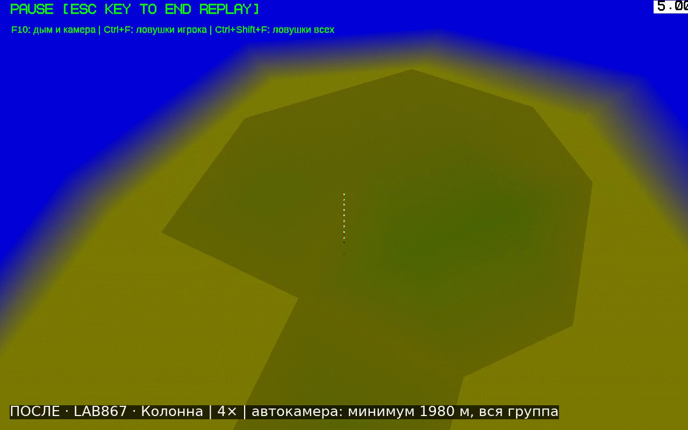
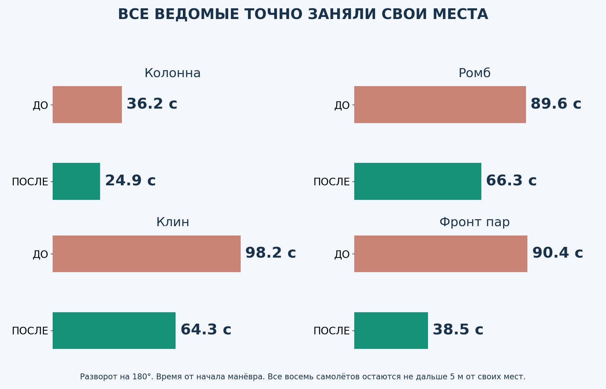
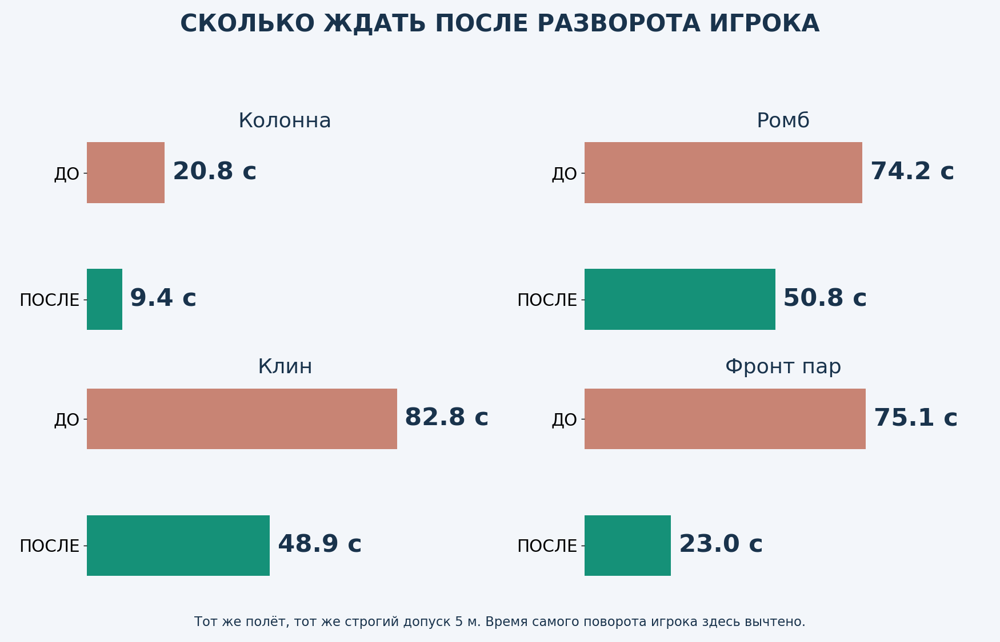
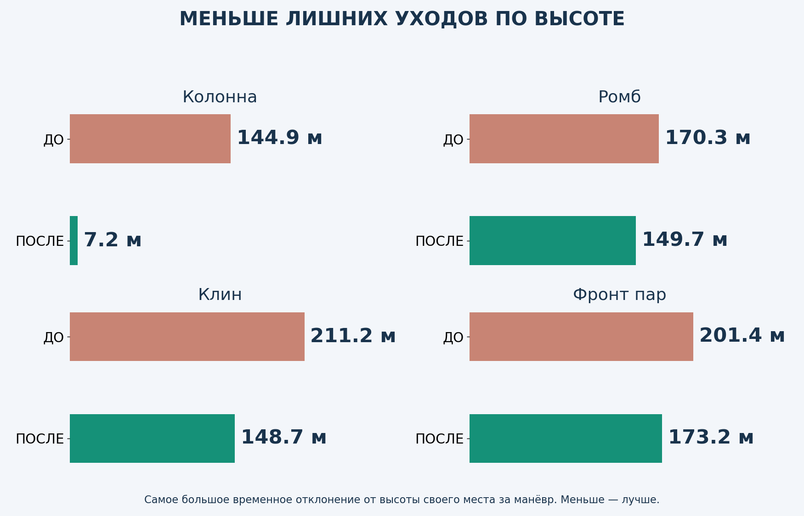
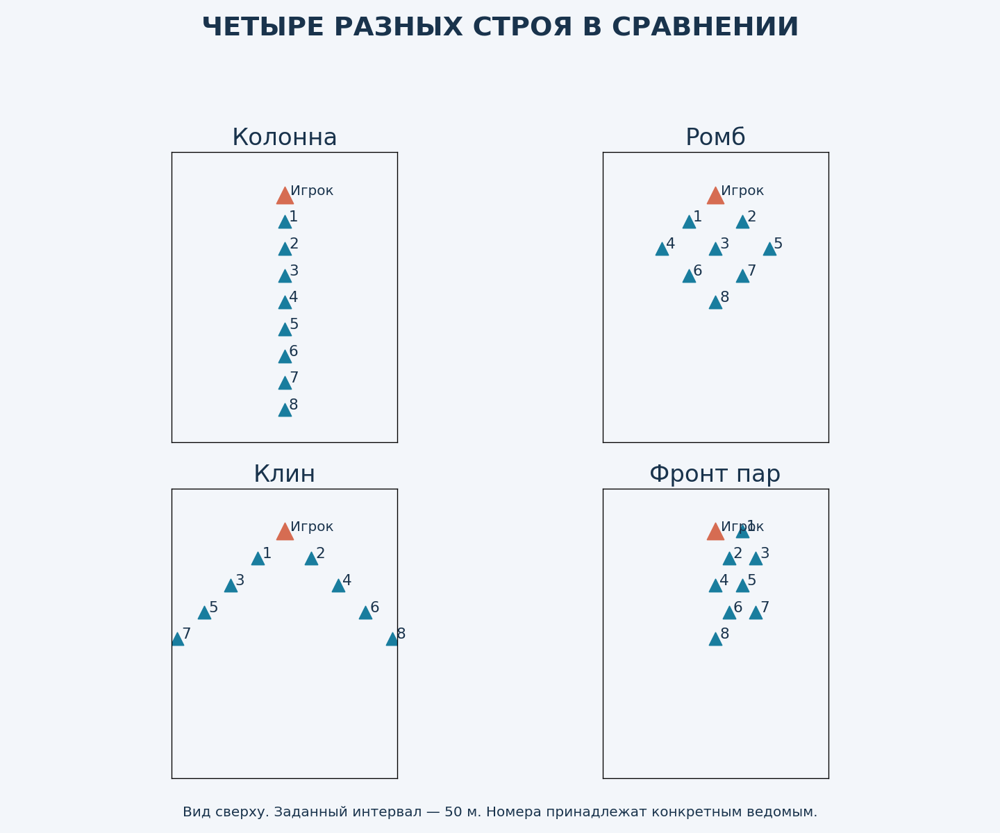
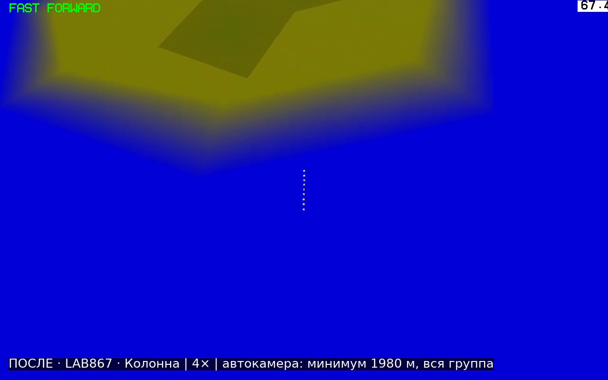
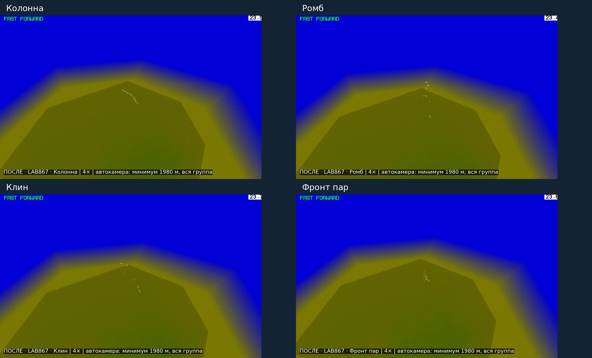
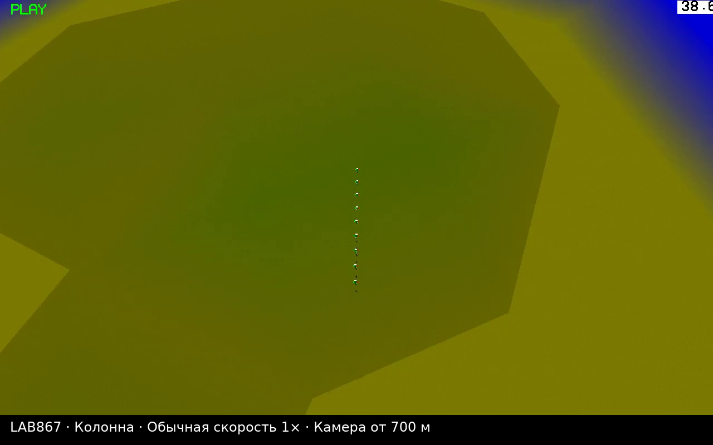
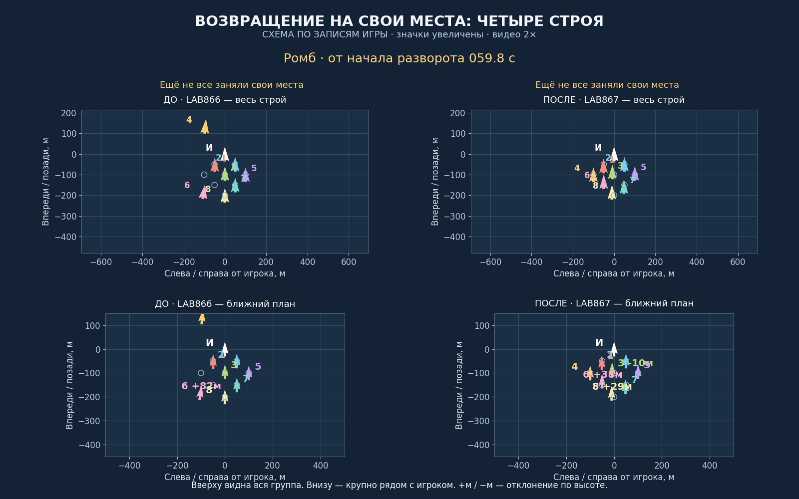
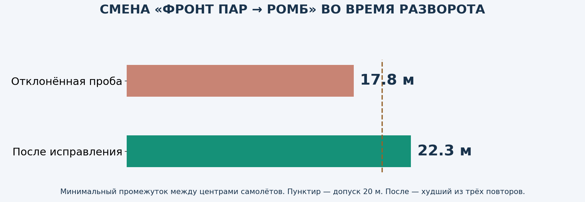

Тестовая версия для просмотра. Рабочая v8.6.2 и предыдущая LAB866 сохранены. Установочного обновления здесь нет.
▶ ПОСЛЕ: четыре строя, общий вид · ▶ ДО: LAB866, те же задания
▶ Схема с крупными номерами · ▶ Колонна в обычном времени, ближе


Здесь измеряется именно занятие своих мест, а не только завершение поворота: все восемь ведомых ближе 5 метров к назначенным позициям и остаются там до конца записи, минимум две секунды. Отсчёт начинается с поворота игрока. Раньше в отчётах использовался более мягкий допуск 15 м; здесь обе версии пересчитаны с одинаковым допуском 5 м.


Не каждый манёвр ускорился заметно: колонна после поворота 90° с прежним допуском 15 м: 20.2 → 20.0 с. Здесь изменение небольшое. Обещать одинаковое ускорение любых манёвров нельзя.
После «Разлёта» колонна точно заняла места за 55.3 → 42.8 с от команды «Собраться». Перед этим — 18 секунд разлёта, высота 100 м.

В старом LAB866 строй №11 ошибочно подписали «Фронт пар». Правильное название №11 — обратный клин, а фронт пар — №10. В этом сравнении используются правильные названия и реальные позиции.


Общие игровые ролики идут 4×, ракурс одинаковый. Оба сняты одним проигрывателем: «до» воспроизводит запись полёта LAB866, «после» — запись LAB867. Минимальная дистанция камеры — 1980 м, в девять раз дальше прежних 220 м. Камера дополнительно отдаляется и смещает центр, чтобы вместить всю группу. Для прямого сравнения расстояний используй схему: там у обеих версий общий масштаб. Если строй растянут на километры, самолёты становятся мелкими — для этого рядом есть схема с увеличенными значками и номерами.

Отдельный близкий ролик колонны идёт 1×, без ускорения. Схема ниже идёт 2× и построена по настоящим записям координат: это схема, не съёмка игрового экрана. Верхние окна показывают всех, нижние — увеличенный участок возле игрока.

Физика, ограничение угла атаки, доступная тяга, предотвращение опасного сближения и защита от земли сохранены. Изменения сопровождения предназначены для истребителей; гражданская авиация и вертолёты не переведены на этот режим.
147 полётных проверок новой сборки, плюс 10 свежих сравнительных полётов сохранённой LAB866. Все предусмотренные проверки пройдены. Отдельно: 1400 проверок геометрии.
Проверены 1–8 ведомых, повороты 90° и 180°, разные строи, смена курса без паузы, набор и снижение, разлёт и сбор, прикрытие, уступление игроку, намеренные потери, отставший ведомый, скорость и торможение, МиГ-29 и F-18, смешанная группа, сохранение состояния и пауза. Есть полёт в обычном времени; основная автоматизация использует штатную физику с шагом 0,025 с. Интервалы измерены по сохранённым координатам примерно раз в 0,075 с; это не непрерывная математическая гарантия.

При первой проверке перехода «фронт пар → ромб» все выжили, но сблизились до 17,8 м между центрами, ниже нашего допуска 20 м. Этот вариант отклонён. После исправления переход проверен заново и повторён три раза; минимальный интервал в повторах 22.3 м. Это не гарантия для любых самолётов и любых интервалов.
На старте с абсолютной высотой 10 м штатный автопилот ведущего сам начинает спасательный набор — то же наблюдается в неизменённой LAB866. Поэтому там проверены безопасность всей фазы и последующий сбор после явного вывода ведущего на 100 м. На 40 и 200 м — возврат к исходной высоте. Неправильные и неудачные пробы сохранены отдельно.
По три замера точного сбора после 180°, включая основной полёт:
Сравнительные задания задаёт штатный автопилот ведущего: восемь МиГ-29, карта OCEAN, 180 м/с, интервал 50 м, высота 1000 м. Числа относятся к этим условиям. Проверено под Wine на лабораторной 64-битной сборке; запуск будущего выпуска на твоей Windows 10 x86 ещё предстоит проверить отдельно.
Скачать отчёт со всеми видео · Исходники и сохранённая LAB866 · Замеры и записи